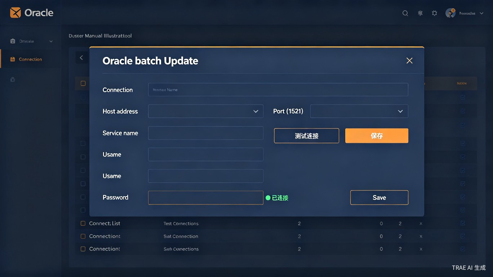

| 配置项 | 最低要求 | 推荐配置 |
|---|---|---|
| 操作系统 | Windows 7 / Windows Server 2008 R2 | Windows 10+ / Windows Server 2016+ |
| 跨平台支持 | macOS / Linux / 麒麟 V10 | |
| 内存 | 2 GB | 4 GB 以上 |
| 硬盘 | 500 MB | 1 GB 以上 |
| Oracle 客户端 | Oracle Instant Client 19+ | 已安装 Oracle 数据库客户端 |
下载 DBForge_v2.8.0_linux-x86_64.tar.gz（Linux）或 DBForge.exe（Windows）
Linux：tar -xzf DBForge_v2.8.0_linux-x86_64.tar.gz && ./DBForge
Windows：双击 DBForge.exe 即可运行
下载 DBForge_Portable_v2.8.0.zip
解压到任意目录，双击 DBForge_Portable.bat（Windows）或运行 ./DBForge_Portable.sh（Linux）
# 构建并启动
docker-compose up -d
# 浏览器访问
http://localhost:6080
如果服务器已安装 Oracle 数据库或客户端：
访问 Oracle 官网下载对应操作系统版本（Basic 或 Basic Light）
Windows：C:\oracle\instantclient_19_8
Linux：/opt/oracle/instantclient_19_8
Windows：在系统环境变量 PATH 中添加 Instant Client 目录
Linux：export LD_LIBRARY_PATH=/opt/oracle/instantclient_19_8:$LD_LIBRARY_PATH
用于连接 MySQL 数据库的 Python 驱动库。
pip install PyMySQLpython -c "import pymysql; print('PyMySQL', pymysql.__version__)"GRANT ALL PRIVILEGES ON *.* TO 'username'@'%' IDENTIFIED BY 'password';
FLUSH PRIVILEGES;用于连接 MS SQL Server 数据库的驱动。需要同时安装系统级 ODBC 驱动与 Python 级 pyodbc 库。
从微软官网下载：msodbcsql.msi，运行安装向导
pip install pyodbc# 添加微软 GPG 公钥
curl https://packages.microsoft.com/keys/microsoft.asc | apt-key add -
# 添加微软 apt 仓库
curl https://packages.microsoft.com/config/ubuntu/20.04/prod.list > /etc/apt/sources.list.d/mssql-release.list
# 安装驱动
sudo apt-get update
sudo ACCEPT_EULA=Y apt-get install msodbcsql17 unixodbc-dev
# 安装 Python 库
pip install pyodbcsudo su
curl https://packages.microsoft.com/config/rhel/7/prod.repo > /etc/yum.repos.d/mssql-release.repo
exit
sudo yum remove unixODBC-utf16 unixODBC-utf16-devel
sudo ACCEPT_EULA=Y yum install msodbcsql17 unixODBC-devel
pip install pyodbcbrew tap microsoft/mssql-release https://github.com/Microsoft/homebrew-mssql-release
brew update
HOMEBREW_NO_ENV_FILTERING=1 ACCEPT_EULA=Y brew install msodbcsql17 mssql-tools
pip install pyodbcpython -c "import pyodbc; print(pyodbc.drivers())"ODBC Driver 17 for SQL Server。
直接解压 DBForge_UserManual.zip，ZIP 格式不保留 Windows 安全标记，解压后即可正常打开。
| 操作系统 | 脚本 | 使用方法 |
|---|---|---|
| Windows 7 | chm_unblock.bat | 双击运行 |
| Windows 10 / 11 | chm_unblock.ps1 | 右键 → "使用 PowerShell 运行" |
右键点击 DBForge_UserManual.chm → 属性
在"常规"选项卡底部，找到安全提示，勾选「解除锁定」复选框
点击确定，然后正常打开 CHM 文件